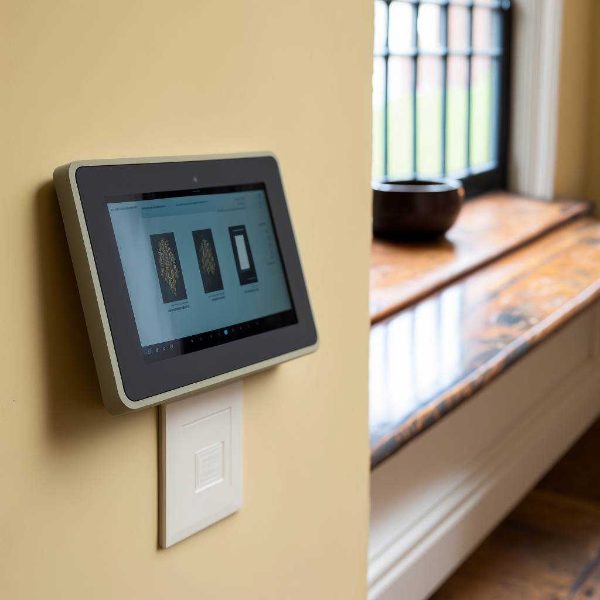

Many of this systems already exist, but non of the are easy to use for an elderly person. That's why a simple an intuitive voice-activated
control panel is used. It enables the connection of all aforementioned sensors, and makes it really simple for someone to interact with
new technologies. It can send text messeges via voice, and read them aloud, and also remind you to take vital medication, and drink water.
It can also do other stuff, like start a video call, or call emergency services when someone yells for help.